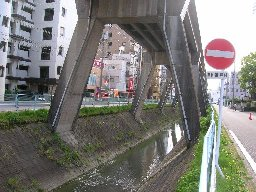
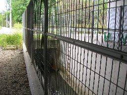
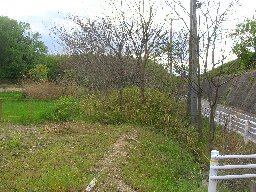
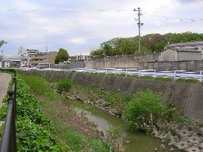

植田川 (名東区の川)


猪高緑地を水源とし、名古屋市営地下鉄東山線の高架下を西下し、302号線に沿うように南下し、天白区で天白川に合流する。
名古屋市営地下鉄東山線は上社駅から東は地上を走っているが、上社と本郷駅の間の600mは植田川の上に高架で建設された珍しい形式である。

上は名古屋市と長久手町の境界の東名高速道路下を北から見ている。
植田川の最上流は写真のようにふたをされた側溝になっており、それより上流は外からは見えない。

その南西は猪高緑地であり、その側溝からの水が豊富に植田川に流れ込んでいる。
猪高緑地は名古屋市では市街地の東のはずれに残された貴重な雑木林として保全されているが、
反対側の長久手町では名古屋に近い土地として山を削り大々的に宅地開発されている。
そのため名古屋市内から猪高緑地の林に入り山を上ると頂上から東が急に宅地へと変化する意外さを感じる。

302号付近の植田川はコンクリート護岸になっている。
ところどころに散歩道も整備され、また自転車は走りやすいが住宅地の中を流れているため、自然を感じながら散策する雰囲気ではない。
メニュー